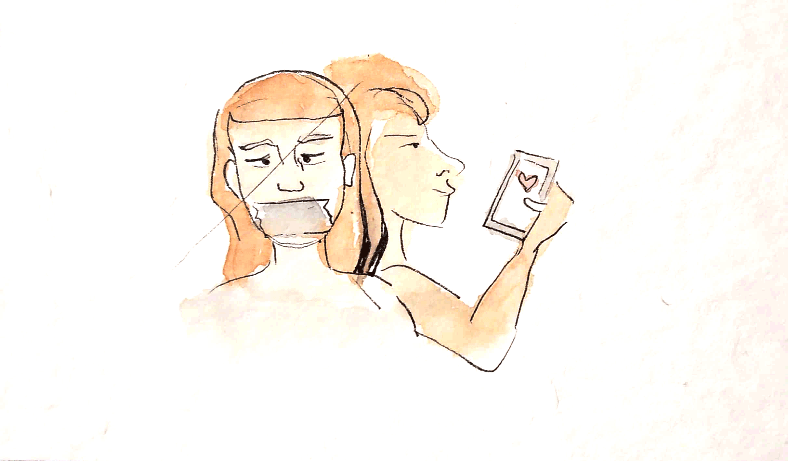
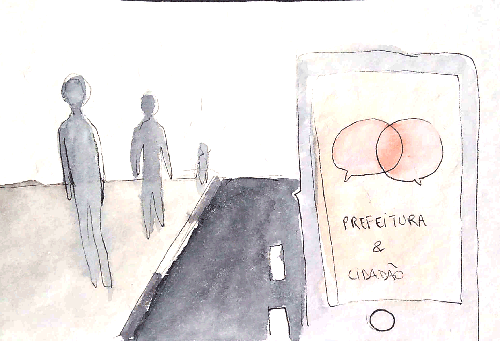

Healthchain

A partir da premissa de que informações de pacientes podem ser muito valiosas para a logística de um hospital, assim como a melhoria da experiência do próprio paciente o projeto propõe uma maneira e ciente de troca de informação entre hospital e paciente. Com o uso de blockchain o hospital recebe informações e consegue personalizar ou remarcar consultas.
Box health care
Uma solução para a agilizar a triagem do paciente no hospital. Como foco na diminuição do tempo gasto, a solução permite agilização de exames pré agendados e com uma interface conversacional de voz permite a inclusão de pessoas com de ciência.
Santuário

Ao abordar o problema de violência contra mulher, a solução propõe conectar mulheres com instuições sociais, médicos e redes de apoio. Com o objetivo de quebrar de silencio e dar suporte a mulher violentada, a plataforma utiliza smartphone para facilitar o acesso da vítima.
Agente cidadão
A solução pretende fornecer uma plataforma para informar ocorrência públicas de qualquer tipo ao governo. Pretende notficar instituições responsáveis para que atitudes possam ser tomadas em relação a ocorrência de maneira rápida e efetiva.
Hatsune

A solução pretende fornecer uma plataforma para informar ocorrência públicas de qualquer tipo ao governo. Pretende notficar instituições responsáveis para que atitudes possam ser tomadas em relação a ocorrência de maneira rápida e efetiva.